1 Transformer
Transformer 架构、Attention、位置编码与常见变体
📑 页面目录
一、背景
Transformer是一个sequence-to-sequence模型。与其他Seq2Seq模型不同:
- 抛弃了循环和卷积
- 完全依赖注意机制来构成整个网络的架构
Transformer 相比于 RNN有什么优势？
- 并行计算: RNN系列模型，无法并行计算，因为 T 时刻的计算依赖 T-1 时刻的隐层计算结果
- 解决长期依赖问题: 顺序计算的过程中信息会丢失，LSTM等门机制的结构无法彻底解决长期依赖问题
- 抽取更丰富信息: self-attention让源序列和目标序列首先“自关联” 起来
二、网络结构
Transformer是encoder-decoder结构，由multi-head self-attention和position-wise fully connected feed-forward network堆叠而成。
作者的实验是通过搭建编码器和解码器各6层，总共12层的Encoder-Decoder，并在机器翻译中取得了BLEU值得新高。
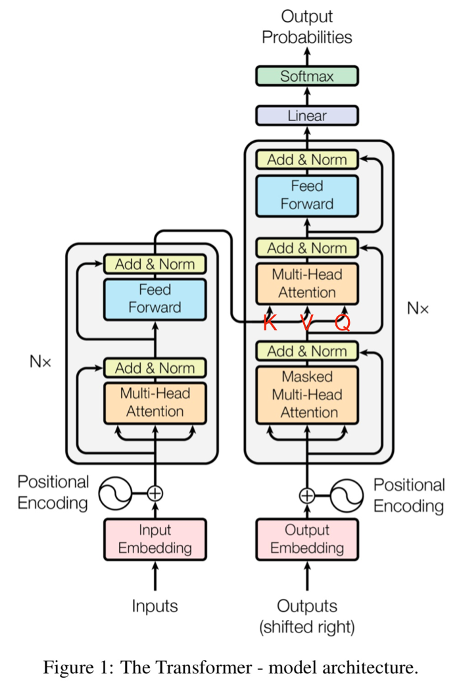
Encoder 的最后一层输出，与 Decoder 的每一层进行交互
输入: "I love AI"
↓
[Encoder Stack] (例如 6 层)
每个词通过 6 层连续理解，形成深层语义表示
↓
最终 Encoder 状态: 3 个上下文向量 (h₁, h₂, h₃)
↓
└───────────────────┐
│ (提供给每一层 Decoder 的 Cross-Attention)
↓
Decoder 第一步: 预测 "我"
输入: <sos>
[Decoder Block 1]: Masked SA(感知已生成词) → Cross-Attention(提取 Encoder 信息)
[Decoder Block 2]: Masked SA → Cross-Attention(再次提取 Encoder 信息)
[...] 重复堆叠 N 层
[Decoder Block 6]: 最终输出向量 → 线性层预测: "我"
↓
Decoder 第二步: 预测 "喜欢"
输入: <sos> 我
[Decoder Block 1]: Masked SA(使 "我" 看到 <sos>) → Cross-Attention(提取 Encoder 信息)
[Decoder Block 2...6]: 层层传递，深层对齐 "I love" 与 "我" 的关系
最终输出向量 → 线性层预测: "喜欢"
↓
Decoder 第三步: 预测 "人工智能"
输入: <sos> 我 喜欢
[Decoder Block 1]: Masked SA → Cross-Attention(提取 Encoder 信息)
[Decoder Block 2...6]: 层层传递，建模 "喜欢" 后续最可能的语义
最终输出向量 → 线性层预测: "人工智能"
↓
输出: "我 喜欢 人工智能"- 输入的词向量首先加上Positional Encoding(不是拼接)，作为输入
- Encoder
- Multi-head self attention Self Attention
- Add & Norm, post_norm \( \mathrm{LayerNorm}(x + \mathrm{Sublayer}(x)) \)
- FFN
- Add & Norm。
- 然后将输出输入至下一个Encoder中
- 最后一个Encoder的输出将会作为memory保留
- Decoder
- Masked Multi-head self attention Causal Attention
- Add & Normalize
- Multi-head self attention \(K\)、\(V\) 来自于 Encoder 的 memory Cross Attention
- FFN
- Add & Norm
- Transformer的输出向量可以用来做各种下游任务
三、attention
1 定义
将 query 和 key-value字典映射到输出的函数。其中输出为value的加权乘积，权重由query和key的一致性决定。
一致性由打分公式确定，打完分后使用softmax 分布注意力。
2缩放点积
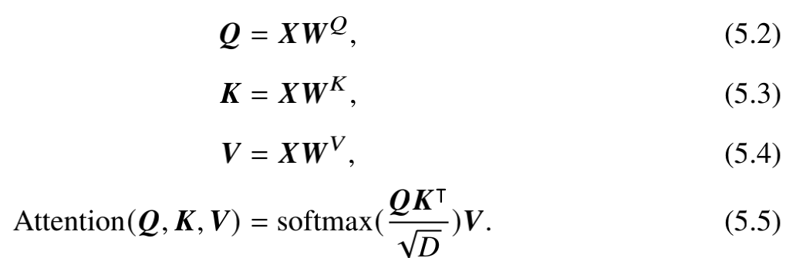
- query 和 key 进行相似度计算, 得到权值
- 将权值进行归一化, 得到权重
- 将权重和 value 进行加权求和
相似性计算:
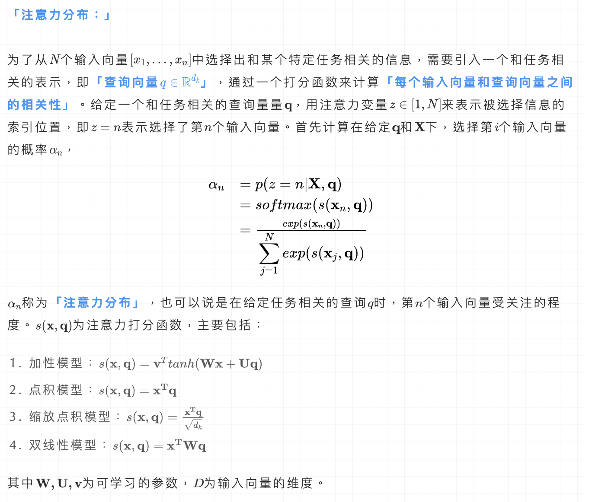
选择缩放点积模型的原因：
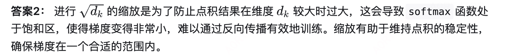
3.1 Self Attention
过去只在输入与输出之间做Attention，忽略输入与输入之间 及 输出与输出之间的相关性。在序列内部做Attention，寻找序列内部的联系。
Self-Attention 机制的关键在于，在处理文本时，它会利用文本里除目标词之外的其他各个词的信息，来强化对目标词语义的表达。
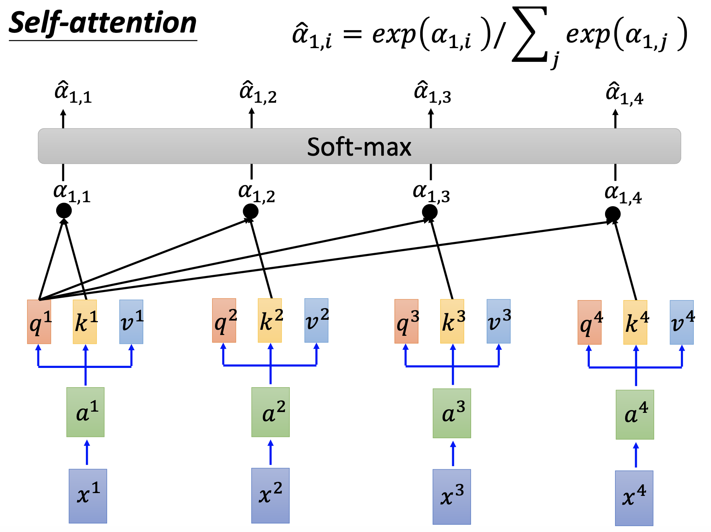
why self-attention
- 并行 attention 解决了 RNN 不能并行计算的问题。attention机制每一步计算不依赖于上一步的计算结果
- 长期依赖 attention引入之前，长距离信息会被弱化，attention挑重点，不丢失重要的信息
- 计算复杂度 \(O(n^2 d)\) \(n\) 是序列的长度，\(d\) 是 embedding 的维度。
有什么技术降低复杂度提升输入长度的？
Sparse Attention，放弃对全文的关注，只关心局部的语义组合，相当于self-attention上又加了一些mask，这样的话就可以降低复杂度，而且下游任务的语义关联性的体现往往是局部/稀疏的。
why 线性变换
在相同量级的情况下，q与k点积的值会是最大的（可以从“两数和相同的情况下，两数相等对应的积最大”类比过来）。 那在softmax后的加权平均中，该词本身所占比重最大，使得其他词的比重很少，无法有效利用上下文信息来增强当前词的语义表示。
对于每个单词，创建一个Query向量，一个Key向量和一个Value向量。这些向量是通过词嵌入乘以我们训练过程中创建的3个训练矩阵而产生的。
注意这些新向量的维度比嵌入向量小。我们知道嵌入向量的维度为512，而这里的新向量的维度只有64维。新向量并不是必须小一些。
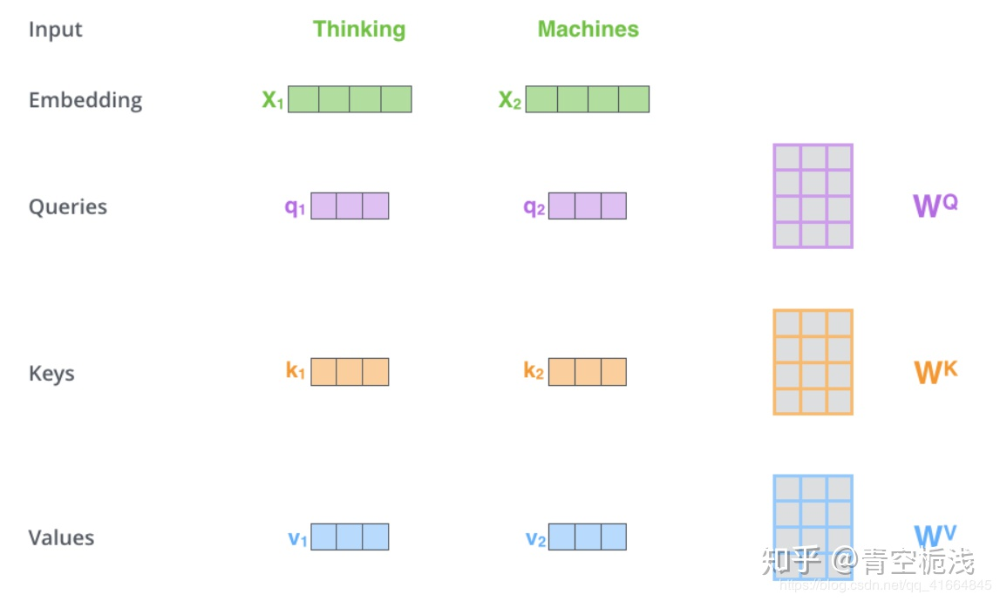
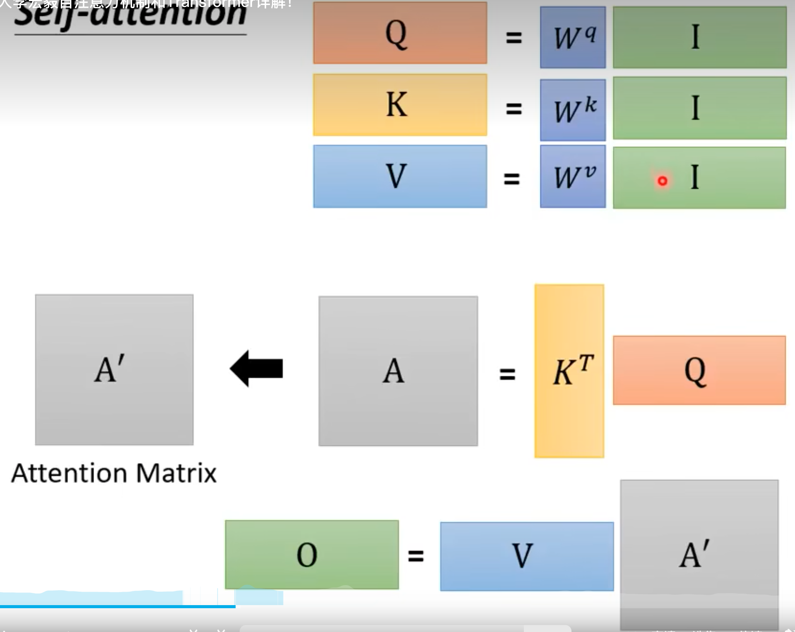
与卷积相比，自主力感受野更宽。
3.2 Mutli-Head Attention
- 先对就是把 \(Q\)、\(K\)、\(V\) 通过参数矩阵映射一下
- 然后再做Attention
- 把这个过程重复做h次
- concat结果
多头机制意义：
- 可类比CNN中使用多个卷积，多头的注意力有助于网络捕捉到更丰富的特征/信息。Multi-Head其实不是必须的
- 多个头可以代表多个子空间。计算在不同空间下的重要性。一个头会平均这一点。
- 一个头的时候softmax分数更多的是原词特别高。多头下可以把专注点更多放在其他词里
4 缺点
忽略了位置信息 可以通过增加Positional Encoding
四、位置编码
自注意力机制的权重计算都是依赖于与的相关性的，没有考虑到输入的位置信息。为了解决上述问题，Transformer在输入与编码层之间引入位置编码进行修正。位置编码不参加学习！理想情况下，位置嵌入的设计应该满足以下条件：
- 它应该为每个字输出唯一的编码
- 不同长度的句子之间，任何两个字之间的差值应该保持一致
- 它的值应该是有界的
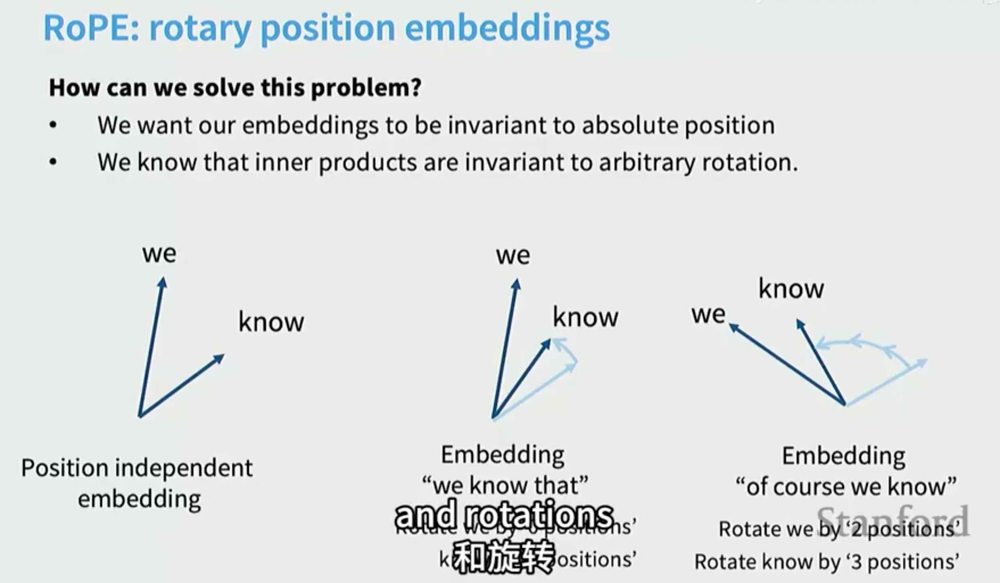
Masked Self-Attention
look ahead mask 不存在的位置记为 \(-\infty\)，存在的位置记为 \(0\)
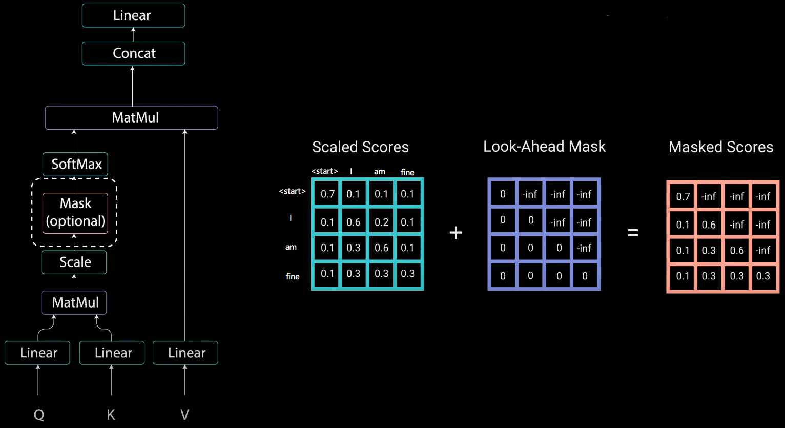
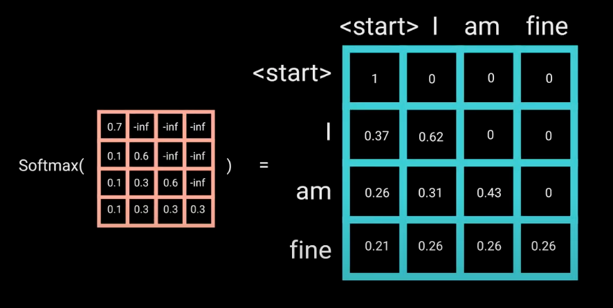
五、变体
1 归一化方法
大语言模型的预训练过程中经常会出现不稳定的问题。为了应对这一问题，深度学习方法通常会采用特定的归一化策略来加强神经网络训练过程的稳定性。原始的 Transformer 模型主要使用了层归一化方法（Layer Normalization, LN）。随着研究工作的不断深入，基于层归一化的改进技术不断涌现，例如均方根层归一化（Root Mean Square Layer Normalization, RMSNorm）和 DeepNorm ，这些新技术已经在一些大语言模型中得到应用。下面进行具体介绍。
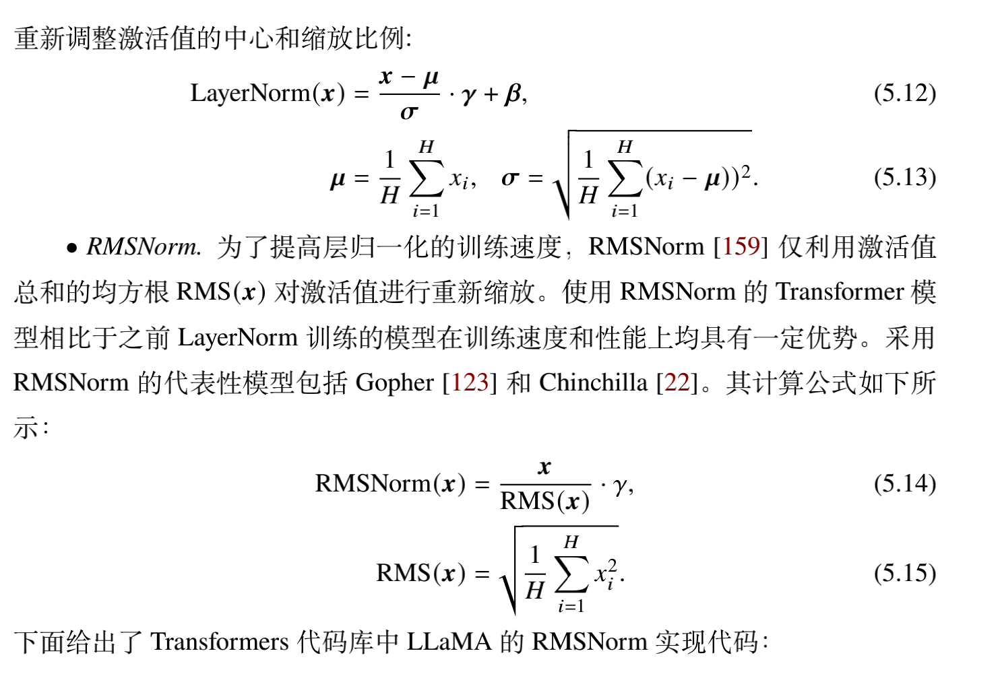
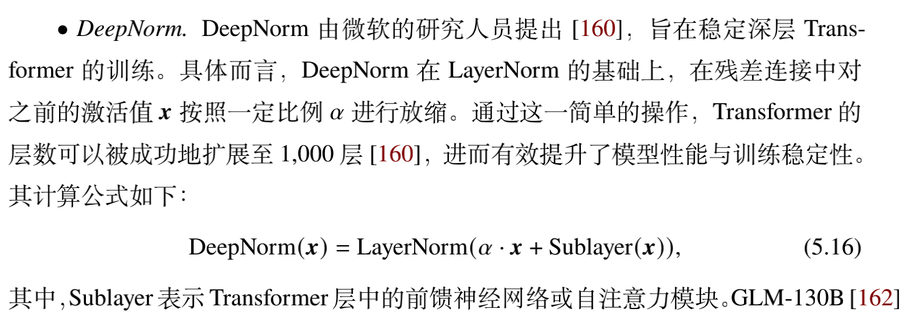
2 归一化位置
Post Norm 把 Normalization 放在一个模块的最后，这样下一个模块接收到的总是归一化后的结果。这比较符合 Normalization 的初衷，就是为了降低梯度的方差。但是层层堆叠起来，基建 ResNet 的结构其实被破坏了。这就导致 Transformers训练不稳定，收敛慢和深度支持差。
| 特性 | Post-LN (原始版本) | Pre-LN (主流版本) |
|---|---|---|
| LN 位置 | 残差连接后 | 残差连接内（子层前） |
| 训练稳定性 | 较差，极度依赖 Warmup | 更好，甚至可以不用 Warmup |
| 收敛速度 | 调优后可能较快 | 初期收敛更快 |
| 深度支持 | 难以训练极深网络 | 容易扩展到百层以上 |
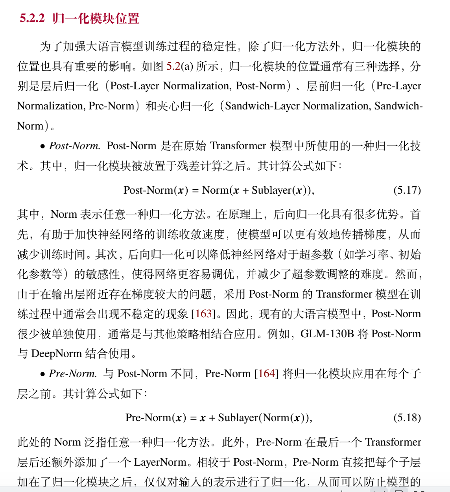
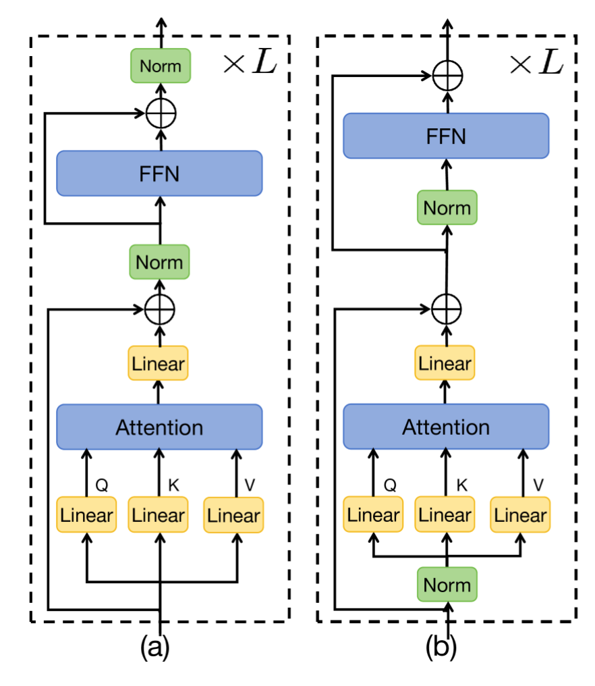
(a) Post-Norm (b) Pre-Norm
3 注意力机制
注意力机制是 Transformer 架构中的核心技术，它能够针对序列中的词元对构建交互关系，聚合来自于不同位置的语义信息。下面介绍四种常见的注意力机制的设计方法。
稀疏注意力机制
尽管完整自注意力机制具有较强的建模能力，但是它需要平方级的计算复杂性。在处理长序列时较为显著，带来了较大的计算和存储开销。为了降低注意力机制的计算复杂度，研究人员提出了多种高效的注意力变种。
滑动窗口注意力机制（Sliding Window Attention, SWA）
是大语言模型中使用最多的一种稀疏注意力机制。不同于完整的注意力机制，滑动窗口注意力根据词元位置，仅仅将位置索引上距离该词元一定范围内的词元考虑到注意力的计算中。具体来说，滑动窗口注意力设置了一个大小为 \(w\) 的窗口，对每个词元 \(u_t\)，只对窗口内的词元 \([u_{t-w+1}, \ldots, u_t]\) 进行注意力计算。进一步，通过信息的逐层传递，模型实现了随着层数线性增长的感受野，从而获取远处词元的信息。
多查询/分组查询注意力 MQA
为了提升注意力机制的效率，多查询注意力（Multi-Query Attention, MQA）提出针对不同的头共享相同的键和值变换矩阵。这种方法减少了访存量，提高了计算强度，为了结合多查询注意力机制的效率与多头注意力机制的性能，研究人员进一步提出了分组查询注意力机制（Grouped-Query Attention, GQA）。GQA 将全部的头划分为若干组，并且针对同一组内的头共享相同的变换矩阵。这种注意力机制有效地平衡了效率和性能，被 LLaMA-2 模型所使用。
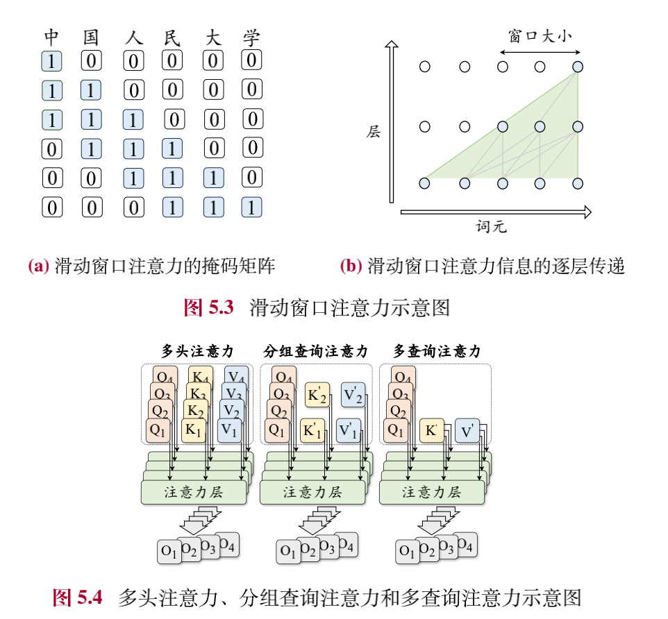
硬件优化的注意力机制
除了在算法层面上提升注意力机制的计算效率，还可以进一步利用硬件设施来优化注意力模块的速度和内存消耗。其中，两个具有 代表性的工作是 Flash Attention 与 Paged Attention
- FlashAttention 通过矩阵分块计算以及减少内存读写次数的方式，提高注意力分数的计算效率；
- PagedAttention 则针对增量解码阶段，对于 KV 缓存进行分块存储，并优化了计算方式，增大了并行计算度，从而提高了计算效率。
4 MOE
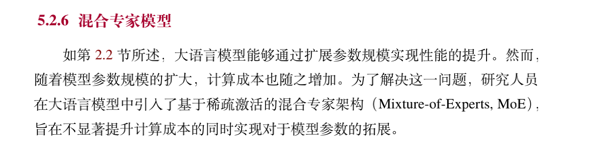
能让模型在参数总量巨大的前提下，对每个输入只激活其中的一小部分进行计算，从而在不显著增加推理计算量（FLOPs）的前提下，大幅扩充模型的总参数量，实现更高效的扩展。
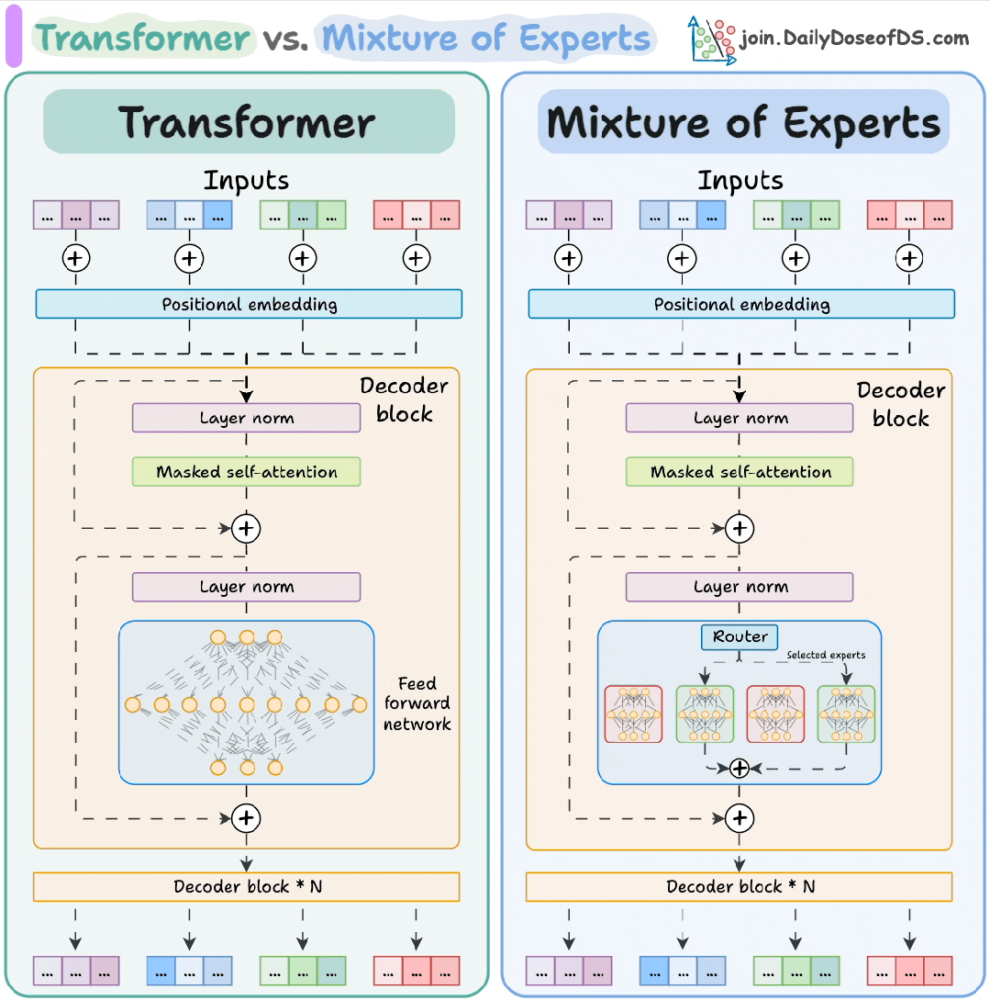
5 长上下文模型
在实际应用中，大语言模型对于长文本数据的处理需求日益凸显，尤其在长文档分析、多轮对话、故事创作等场景下。在这些情况下，模型需要处理的文本的长度常常超出预定义上下文窗口大小。例如，LLaMA-2 的上下文窗口限制为 4,096个词元。增强大语言模型长文本建模能力的研究主要集中在两个方向：一是扩展位置编码，二是调整上下文窗口。
6 kv cache
KV Cache是Transformer标配的推理加速功能。它只能用于Decoder架构的自回归推理，这是因为Decoder有Causal Mask，在推理的时候前面已经生成的字符不需要与后面的字符产生attention，
从而使得前面已经计算的 \(K\) 和 \(V\) 可以缓存起来。
KV Cache 本质上节约的是生成每个新 token 时，历史 token 的 Key 和 Value 的重复计算。

没有缓存
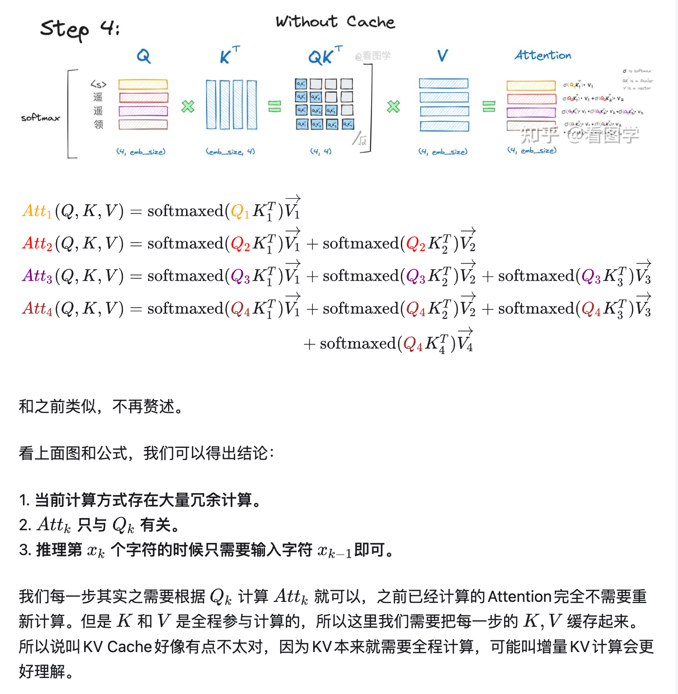
有缓存
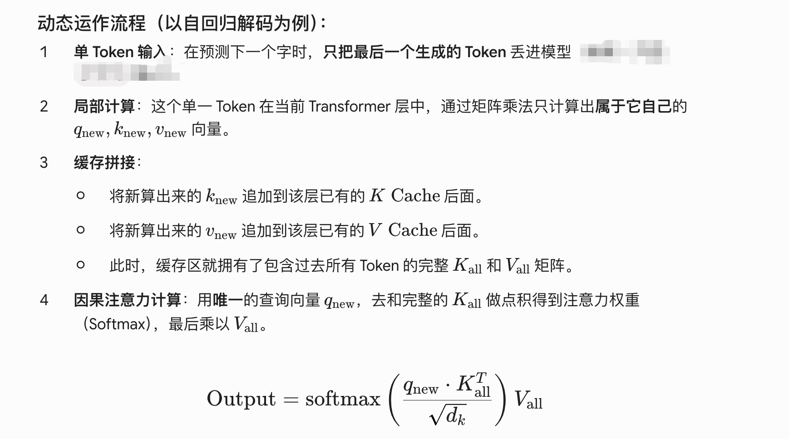
Decoder 推理分Prefill和Decoding两个阶段
- Prefill：一次性并行处理输入 prompt，初始化 KV Cache，并根据最后一个token生成第一个输出 token
- Decoding：逐个生成后续 token，每步仅计算新 token 的 \(K,V\) 和注意力，复用 KV Cache